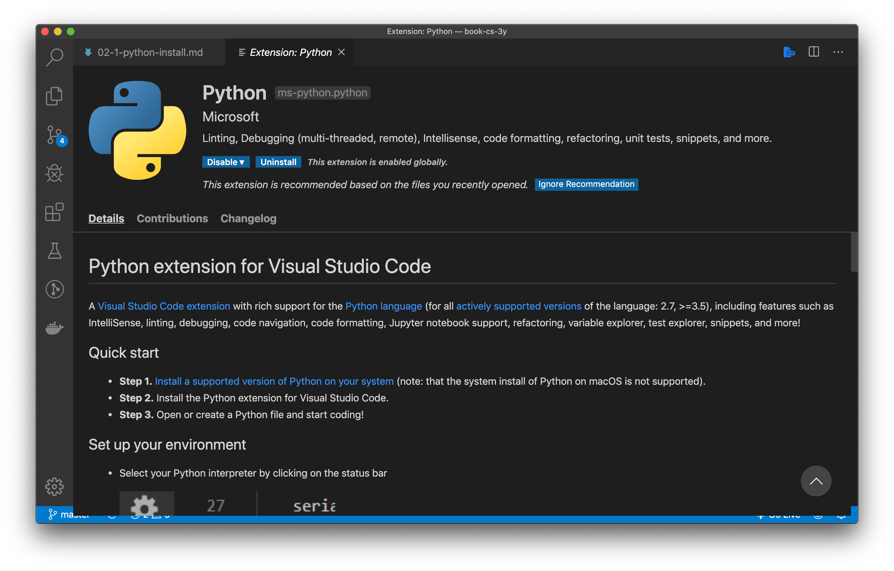

Organizzazione di un sistema operativo
Il sistema operativo gestisce le risorse della macchina (memoria, processore, periferiche) per permettere a più applicazioni di poter funzionare contemporaneamente. Ma ogni cosa ha un suo costo: il sistema operativo utilizza per sé stesso una porzione a volte considerevole delle risorse stesse del nostro computer: pensiamo a quanti GB sul disco occupa una installazione di Windows o Mac, a quanta memoria occupa, e che ha volte i loro processi impegnano la CPU senza una ragione apparente. Oltre a questo pensiamo a problemi di vulnerabilità, aggiornamento, etc.
Se noi vogliamo far girare un solo programma sul computer, possiamo non aver bisogno di un sistema operativo. Tipicamente quest accade per piccoli elaboratori per compiti molto specifici: questo sistemi vengono chiamati embedded.
Il sistema operativo è una componente software molto complessa: per poter essere gestita in maniera ottimale, è stata divisa in sotto-componenti. Di seguito vediamo i principali.
Kernel
Per rappresentare i componenti del sistema operativo, si usa spesso la metafora delle sfere concentriche, in cui al centro di tutto c'è l'hardware.

Il programma che è più vicino all'hardware viene chiamato kernel. Noi ci occuperemo in particolare del kernel Linux, un kernel open-source.
Il kernel Linux è stato creato nel 1991 dal finlandese Linus Torvalds ed è distribuito attraverso la licenza di software libero GNU GPLv2. Questa licenza è stata ideata da Richard Stallman (dell'MIT di Boston) per tutelare il software "libero" (in inglese free software, in cui la parola free ha il significato di libero come in "free as in speech").
Il kernel si occupa di mediare l'accesso delle applicazioni alle risorse del computer:
- central processing unit (CPU)
- memoria volatile (RAM)
- periferiche di input/output (hard disk, tastiera, mouse, stampanti, etc.)
Il kernel è un programma come gli altri, non ha niente di "magico". In particolare il kernel è un insieme di librerie scritte principalmente in C/C++. Del kernel Linux possiamo anche vederne il codice sorgente, visto che è un software libero e quindi anche aperto.
Shell
Per usare direttamente il kernel dovremmo scrivere dei programmi in C/C++, ad esempio per interrogare l'hard-disk e farci restituire i file all'interno di una certa cartella. Scrivere un programma noi per ogni operazione che dobbiamo svolgere, ovviamente non è molto comodo.
Per poter usare in maniera le chiamate di sistema che ci mette a disposizione il kernel, ci sono una serie di strumenti che ci facilitano i compito. Per Linux, queste utilità sono state sviluppate dal progetto GNU, e si chiamano GNU coreutils.
Il progetto GNU è stato fondato nel 1983 da Richard Stallman, al MIT di Boston. GNU ha lo scopo in primo luogo di permettere agli sviluppatori di tutto il mondo di poter sviluppare liberamente software, ovvero avendo a disposizione il codice sorgente dei programmi di altre aziende che usano, e senza la necessità di pagare licenze. Le utilità che useremo in questo corso sono solo parte del progetto; un'altra parte fondamentale è la licenza che permette al software di essere usato legalmente, rispettando le libertà fondamentali del free software. Il nome di questa licenza è GPL (General Public Licence), di cui l'ultima versione è la GPLv3

Anche in questo caso possiamo andare a cercare il codice sorgente.
Terminale
Per poter interagire con la shell, abbiamo bisogno di un'applicazione specifica che ci permetta di farlo. Quest'applicazione si chiama "terminale".

Nell'immagine vedete l'applicazione "iTerm2", molto usata in ambito Apple come terminale.
Comandi
echo
Ritorna un'"eco" del suo argomento sul terminale.
$ echo ciao
ciao
touch
Crea un file o, se già esiste, ne aggiorna la data di ultima modifica.
$ touch ciao
cat
Abbreviazione di "concatenate", mostra il contenuto di un file.
$ cat ciao
Redirect
Il carattere > redirige l'output di un comando verso un file, invece del terminale. Se il file non esiste, viene creato. Se il file esiste, viene sovrascritto.
$ echo "buongiorno" > buongiorno.txt
Se si vuole aggiungere il testo alla fine del file senza sovrascriverlo, si può usare il >>.
$ echo "buongiorno" >> buongiorno.txt
$ cat buongiorno.txt
buongiorno
buongiorno
ls
Elenca i file nella cartella corrente
$ ls
buongiorno.txt ciao
L'opzione -l mostra i dettagli del file.
$ ls -l
total 8
-rw-r--r-- 1 claudio staff 11 Oct 12 07:03 buongiorno.txt
-rw-r--r-- 1 claudio staff 0 Oct 12 07:00 ciao
Aggiungendo anche l'opzione -h mostra i dettagli del file in un formato più leggibile per l'essere umano ("human"). Notare la B alla fine della quinta colonna, che sta per "Byte".
$ ls -lh
total 8
total 8
-rw-r--r-- 1 claudio staff 11B Oct 12 07:03 buongiorno.txt
-rw-r--r-- 1 claudio staff 0B Oct 12 07:00 ciao
Un'altra opzione utile è -a, per visualizzare anche i file nascosti. Su linux, un file è nascosto semplicemente se inizia con il carattere punto (.).
$ ls -lha
total 8
drwxr-xr-x 4 claudio staff 128B Oct 12 07:03 .
drwxr-xr-x 4 claudio staff 128B Oct 12 07:00 ..
-rw-r--r-- 1 claudio staff 11B Oct 12 07:03 buongiorno.txt
-rw-r--r-- 1 claudio staff 0B Oct 12 07:00 ciao
pwd
Abbreviazione di Print Working Directory, visualizza la directory corrente.
$ pwd
/Users/claudio/try/bash
mkdir
Abbreviazione di "make directory", crea una nuova cartella.
$ mkdir food
$ ls -l
-rw-r--r-- 1 claudio staff 22 Oct 12 07:12 buongiorno.txt
-rw-r--r-- 1 claudio staff 0 Oct 12 07:00 ciao
drwxr-xr-x 2 claudio staff 64 Oct 12 07:14 food
Si può capire che è una cartella perché il primo carattere nella riga di "food" è una d che sta appunto per "directory". I file hanno invece un trattino. Alcuni terminali mostrano le cartelle anche con un colore diverso.
cd
Abbreviazione di "change directory", permette di spostarsi tra cartelle.
$ cd food
$ pwd
/Users/claudio/try/bash/food
Usando cd senza argomenti, torno alla "home directory", che viene anche rappresentata con il simbolo ~ (si legge tilde).
$ cd
$ pwd
/Users/claudio/
$ cd ~ # comando equivalente al precedente
$ pwd
/Users/claudio/
Per tornare alla directory precedente, si può usare il simbolo - (trattino).
$ cd -
$ pwd
/Users/claudio/try/bash/food
Per salire di una directory si può usare il doppio punto.
$ cd ..
$ pwd
/Users/claudio/try/bash
cp
Copia un file, abbreviazione di copy.
$ cp ciao hello
$ ls
total 8
-rw-r--r-- 1 claudio staff 22 Oct 12 07:12 buongiorno.txt
-rw-r--r-- 1 claudio staff 0 Oct 12 07:00 ciao
drwxr-xr-x 2 claudio staff 64 Oct 12 07:14 food
-rw-r--r-- 1 claudio staff 0 Oct 12 07:20 hello
mv
Sposta un file da una cartella ad un'altra. Se la cartella di partenza e destinazione coincidono, semplicemente rinomina il file.
$ mv hello hola
$ ls
-rw-r--r-- 1 claudio staff 22 Oct 12 07:12 buongiorno.txt
-rw-r--r-- 1 claudio staff 0 Oct 12 07:00 ciao
drwxr-xr-x 2 claudio staff 64 Oct 12 07:14 food
-rw-r--r-- 1 claudio staff 0 Oct 12 07:20 hola
rm
Elimina un file, abbreviazione di remove.
$ rm hola
$ ls
-rw-r--r-- 1 claudio staff 22 Oct 12 07:12 buongiorno.txt
-rw-r--r-- 1 claudio staff 0 Oct 12 07:00 ciao
drwxr-xr-x 2 claudio staff 64 Oct 12 07:14 food
top
Visualizza i processi attualmente in esecuzione nella macchina.
$ top
Viene visualizzata una tabella a schermo intero. Per uscire, premere la combinazione di tasti ctrl-c
kill
Termina (uccide) un processo in esecuzione. Come argomento deve avere il numero del processo (PID - process ID) che viene visualizzato ad esempio con top.
$ kill 11459 # termina il processo con PID 11459
yes
Stampa su terminale una stringa all'infinito. Di default stampa 'y' ma si può personalizzare passandogli un argomento.
$ yes marconi
marconi
marconi
marconi
....
Anche in questo caso uscire con ctrl-c
/dev/null
Un file speciale all'interno del file system linux che è un pozzo senza fondo.
$ yes > /dev/null ## l'output di yes viene sostanzialmente scartato
ctrl-c
Termina (uccide) il processo corrente.
ctrl-z
Sospende il processo corrente. Per rimetterlo in esecuzione, si possono usare i comandi bg o fg
jobs
Visualizza i lavori in esecuzione. Un "lavoro" è un processo (o più precisamente può essere un insieme di processi) che è stato lanciato dalla shell corrente.
$ yes uno > /dev/null
# ctrl-z
suspended yes uno > /dev/null
$ yes due > /dev/null
# ctrl-z
suspended yes due > /dev/null
$ yes tre > /dev/null
# ctrl-z
suspended yes tre > /dev/null
$ jobs
[1] suspended yes uno > /dev/null
[2] - suspended yes due > /dev/null
[3] + suspended yes tre > /dev/null
Per riprendere un lavoro e portarlo in "foreground", ovvero accessibile dalla shell, si usa fg. Se uso fg senza argomenti, mette in foreground il lavoro contrassegnato dal +.
Per riprendere un lavoro e portarlo in "background", ovvero non accessibile dalla shell, si usa bg.
Per terminare un lavoro, posso usare sempre kill, ma l'argomento deve avere il simbolo %.
$ kill %2
[2] - terminated yes due > /dev/null
$ jobs
[1] - suspended yes uno > /dev/null
[3] + suspended yes tre > /dev/null
Variabili di ambiente
Ogni terminale usa delle variabili che sono definite automaticamente quando viene aperto. Queste variabili vengono dette variabili di ambiente. Per visualizzarle si può usare il comando env.
$ env
TERM_SESSION_ID=w1t0p0:3B371076-0F20-4C26-ACD4-4656F13F9AEA
SSH_AUTH_SOCK=/private/tmp/com.apple.launchd.P5eh4I2m5h/Listeners
LC_TERMINAL_VERSION=3.4.10
COLORFGBG=7;0
......continua.......
Per visualizzare una sola variabile, si può usare echo e la variabile deve essere preceduta dal carattere dollaro.
$ echo $SHELL
/bin/bash
Per assegnare una variabile, si può usare il comando export.
$ export PS1="test>"
Di seguito alcune variabili di ambiente che abbiamo visto:
- $TERM: quale standard rispetta l'applicazione terminale in uso, di solito è
xtermoxterm-256color - $SHELL: quale shell sto utilizzando, su Ubuntu di default è bash (quella sviluppata da GNU)
- $PS1: il prompt dei comandi, ovvero tutto quello che c'è prima del dollaro (dollaro compreso), solitamente include la directory corrente ed il nome utente
Premessa: concetti base di programmazione
Quando vogliamo imparare a programmare, in qualsiasi linguaggio, ci troviamo di fronte ad una pagina vuota.
Cosa dobbiamo fare? Cosa dobbiamo scrivere in questa pagina che ci si presenta davanti?
Quello che facciamo quando scriviamo un programma è qualcosa di fortemente creativo: non andremo solo a scrivere del codice che esegue istruzioni, ma andremo a creare un mondo nuovo, in cui ci potremo muovere ed agire con i concetti e le relazioni che avremo definito noi stessi.
Scrivere codice è come scrivere un romanzo o dipingere su una tela. Le nostre penne e pennelli sono tastiera e mouse, e la tela è lo schermo. Quello che andremo a realizzare però sarà qualcosa che non solo rappresenta la realtà, ma andrà anche ad interagire con essa, e in un medio periodo può anche modificarla ed a sua volta esserne modificato. In altre parole il codice è una cosa viva, in continua evoluzione, la cui capacità di replicazione e mutazione (soprattutto per il codice open-source) lo rende vicino per certi versi ad un essere vivente.
Un programmatore è un bravo osservatore
Un programmatore è un informatico ed il compito principale di un informatico è... risolvere problemi. Per poter risolvere un problema, però, bisogna prima capire qual è il problema, chi ha il problema e perché. Per poter fare questo, un programmatore deve essere un bravo osservatore della realtà. Più importante del QI o della genialità, è la capacità di saper osservare il mondo, ascoltare le persone, immedesimarsi negli altri e saper trasformare tutto questo in righe di codice che funzionino.
Python

Il linguaggio che vedremo quest'anno è Python. Python è un linguaggio completamente open-source, il codice sorgente è reperibile sulla pagina ufficiale di GitHub ed è rilasciato sotto la Python License.

Python è stato creato alla fine degli anni '80 dall'olandese Guido van Rossum, all'età di circa trent'anni. Come molti colleghi nell'ambito informatico, il suo operato è stato costantemente guidato da alcuni ideali, in particolare van Rossum credeva che la programmazione dovesse essere accessibile a tutti; le sue scelte per la sintassi del linguaggio hanno avuto sempre questa direzione. Nel 1999 sono state pubblicate delle linee guida che riassumevano questi concetti, conosciute come "The Zen of Python".
È anche possibile leggere queste linee guida direttamente dentro Python, scrivendo
import this:)
Se volete provare gli snippet di codice in questa pagina, potete usare il playground online di SoloLearn.
Caratteristiche
Python ha una sintassi essenziale, eliminando quasi tutta la punteggiatura.
Esempio di un programma Python completo e valido:
catalogue = ["Harry Potter e il calice di fuoco", "Il rosso e il nero", "Il piccolo principe"]
for title in catalogue:
print(title)
print("goodbye")
Nella prima riga, viene dichiarata una nuova variabile catalogue. Il tipo della variabile viene inferito dal valore assegnato; in questo caso, siccome assegniamo qualcosa che è tra parentesi quadre, il tipo di catalogue è una lista. Fate attenzione: la riga non finisce con il punto e virgola!
Nella seconda riga c'è un ciclo for. Notate che non ci sono parentesi di nessun tipo, né tonde né graffe; attenzione però che la riga in questo caso finisce con i due punti Le stesse regole valgono anche per il condizionale if.
Ma se non ci sono parentesi graffe, come si fa a sapere dove finisce il contenuto del ciclo for? Qui c'è la scelta un po' azzardata di van Rossum: usare l'indentazione del codice per definire dove finiscono i blocchi, ed obbligare lo sviluppatore ad usare le buone pratiche di indentazione. Una scelta che con il tempo tutto sommato ha ripagato!
Quindi vediamo che il contenuto del for è solo print(title), mentre la riga successiva, la quarta, è fuori dal ciclo.
Se eseguiamo il codice, avremo il seguente output su console:
Harry Potter e il calice di fuoco
Il rosso e il nero
Il piccolo principe
goodbye
Importare una libreria esterna
Se ci servono delle librerie esterne per fare delle operazioni particolari, su usano le keyword import e from. Ad esempio immaginiamo di voler stampare la data e l'ora attuali.
from datetime import datetime
print(datetime.now())
che avrà come output il giorno e l'ora attuali, ad esempio:
2019-11-29 21:57:27.676783
In generale, dopo il from ci va il nome di un file Python (senza estensione), e dopo import il nome di una variabile. In questo esempio, nella prima riga importiamo la variabile datetime da un file che si chiama con lo stesso nome. Il file datetime nel caso specifico non è creato da noi ma è una libreria di sistema, ma possiamo usare la stessa sintassi anche per i nostri file.
Creare una classe
Per creare una classe, ad esempio la classe Book, si usa la seguente sintassi:
class Book:
def __init__(self,title,author):
self.title = title
self.author = author
Vediamo bene cosa abbiamo fatto. La prima riga class Book dichiara la classe Book. Nella seconda riga stiamo usando la funzione di sistema __init__(self,...) che è il costruttore della classe, ovvero serve per costruire un nuovo oggetto della classe. Il primo parametro è sempre la keyword self, che identifica l'oggetto che stiamo andando a creare. I parametri successivi servono per inizializzare l'oggetto; nel nostro caso stiamo dicendo che il nostro libro deve sempre avere un autore ed un titolo.
Si può vedere che init è una funzione di sistema perché il nome inizia e finisce con due trattini bassi. Questa è una convenzione specifica di Python.
Per creare un oggetto di questa classe, usiamo la seguente sintassi:
harry_potter = Book("Harry Potter ed il principe mezzosangue","J.K.Rowling")
print(harry_potter.title)
Stiamo dichiarando una variabile chiamata harry_potter che è un oggetto della classe Book, inizializzata con i parametri che seguono. Fate attenzione: non bisogna specificare il parametro self quando si costruisce un oggetto, perché è una variabile che passa Python automaticamente alla funzione __init__.
Mettendo insieme i pezzi, il codice finale per creare una classe ed un oggetto di questa classe sarà:
class Book:
def __init__(self,title,author):
self.title = title
self.author = author
harry_potter = Book("Harry Potter ed il principe mezzosangue","J.K.Rowling")
print(harry_potter.title)
L'output di questo snippet sarà:
Harry Potter ed il principe mezzosangue
Notate l'indentazione: si può capire che la variabile harry_potter viene dichiarata fuori dalla classe perché non ha indentazione.
Librerie aggiuntive
Solo le librerie esterne più comuni, come datetime, sono già pre-installate in Python. Esistono infatti decine di migliaia di librerie, in continuo cambiamento, scaricarle tutte all'inizio sarebbe impossibile oltre che inutile!
Fortunatamente esiste un semplice comando per scaricare ed installare nuove librerie. Aprire un terminale sul proprio computer (anche all'interno di Visual Studio Code), e scrivere:
pip3 install <nome-libreria>
Vediamo che pip3 è un comando che gestisce i pacchetti Python (Pip sta per "Pip installs package", è un acronimo ricorsivo), e <nome-libreria> è il nome della libreria che vogliamo scaricare.
Riferimenti W3Schools
Il sito w3schools è un buon riferimento per imparare il Python. Consigliamo in particolare le seguenti pagine:
A breve ci serviranno anche i seguenti concetti:
Installare Python
Per installare Python su Visual Studio Code, questa è la guida ufficiale. Riepiloghiamo in breve qui i passaggi.
1. Installare Python sul proprio computer
Andare sul sito Python downloads e scaricare l'ultima versione di Python premendo il bottoncione giallo grande con scritto "Download Python".
Quando lo avviate, vedrete una schermata di questo genere (la versione di Python potrebbe cambiare):

Attenzione: selezionate l'ultima spunta in basso "Add Python to PATH" per poter usare i comandi Python anche da terminale.
Seguite le istruzioni fino in fondo, e se necessario riavviate Visual Studio Code.
2. Installare l'estensione per Visual Studio Code
Aprite Visual Studio Code ed installate l'estensione Python di Microsoft.

Una volta installata, quando aprirete un file con estensione .py vi comparirà nella barra blu in basso la possibilità di selezionare l'interprete Python. Selezionate l'ultima versione che avete appena installato.

Creare una web app con HTML5 e Python
Vorrei collegarmi subito a quello che state studiando in TPSI quest'anno e creare una semplicissima applicazione con HTML e Python.
Caso di studio
Immaginiamo di voler gestire una biblioteca scolastica. Da un lato ci serve del codice che gira da qualche parte nel cloud che gestisce la biblioteca, ed una pagina web per poter visualizzare la lista dei libri.
Useremo Python per la prima parte (server), e HTML per la seconda parte (pagina web).
Python
Immaginiamo in maniera veramente minimale che il nostro catalogo sia formato solo dal seguente file Python, a cui diamo il nome di library.py.
# library.py
catalogue = ["Harry Potter e il calice di fuoco", "Il rosso e il nero", "Il piccolo principe"]
Più essenziale di così, si muore... eppure è un codice valido e funzionante.
Web server
Per poter far comunicare Python con la pagina HTML però, serve qualcuno che faccia da intermediario. Non posso infatti chiamare del codice Python direttamente dalla pagina web! Le pagine web possono infatti interagire unicamente tramite dei link, o più precisamente degli URL, e noi ancora non abbiamo nulla del genere.
L'intermediario che mette in comunicazione pagina web e codice sul server si chiama, in modo non troppo sorprendente, web server. Vediamo come si fa su Python.
Esistono diverse librerie che forniscono un web server, noi in questo tutorial useremo Flask, che è estremamente leggero e semplice da usare, anche se magari non ha tutte le funzionalità che offrono altre librerie.
Essendo una libreria esterna non di sistema, bisogna prima di tutto installarla. Come abbiamo visto, apriamo un terminale e scriviamo:
pip3 install flask
et voilà! La libreria è installata e pronta all'uso.
Ora creiamo un nuovo file nel nostro progetto, che chiamiamo app.py. Attenzione: il nome deve essere esattamente questo, altrimenti non funziona tutto automagicamente 🎩.
from flask import Flask
from library import catalogue
import json
app = Flask("marconi")
@app.route("/")
def data_book():
return json.dumps(
[book for book in catalogue]
)
Vediamo cosa abbiamo fatto. Abbiamo importato Flask dalla libreria flask e il nostro catalogo dal file library che abbiamo creato precedentemente. Importiamo anche la libreria di sistema json, che è utile per convertire le variabili Python nel formato stringa JSON (vedi dopo.
La riga app = Flask("marconi") crea un web server e gli da il nome di "marconi" (possiamo mettere quello che preferiamo).
La riga @app.route("/") è un'annotazione: sta ad indicare che la funzione successiva deve essere chiamata quando qualcuno prova ad accedere alla pagina web.
La funzione data_book() viene quindi chiamata quando interroghiamo il web server. Questa funzione ritorna il nostro catalogo in formato JSON. È formata dalle seguenti parti:
json.dumps()è una funzione che converte il parametro che gli viene passato in formato JSON[book for book in catalogue]è una sintassi tipica di Python, che crea una nuova lista con all'interno tutti gli elementi dicatalogue.
Nel dettaglio, stiamo dicendo che per ogni elemento book all'interno della lista catalogue, vogliamo creare un elemento con esattamente lo stesso valore di book.
La precedente forma compatta è equivalente al seguente codice:
mylist = []
for book in catalogue:
mylist.append(book)
Come si può vedere, nella forma compatta non abbiamo bisogno di dichiarare la variabile di appoggio mylist.
Attenzione: se book non fosse un tipo base ma un oggetto, questa sintassi non va bene, perché Python non saprebbe come convertire automaticamente un oggetto ti tipo Book in una stringa JSON. Per risolvere il problema, possiamo dire a Python che per trasformare l'oggetto in JSON deve associare ad ogni proprietà della classe Book una corrispondente proprietà nella stringa JSON. Per fare questo possiamo usare la proprietà __dict__, che come potete intuire dal doppio trattino basso all'inizio e alla fine, è una proprietà di sistema, assegnata automaticamente a tutti gli oggetti di una classe. La funzione precedente diventerebbe quindi:
def data_book():
return json.dumps(
[book.__dict__ for book in catalogue]
)
Il formato JSON
Fate attenzione: JSON è un formato per scambiarsi i dati tra macchine (machine-to-machine), ma che può essere letto e scritto abbastanza facilmente anche dagli esseri umani. JSON quindi non è un codice, o un'applicazione, o una libreria, ma è un formato di stringa che permette alle macchine di comunicare fra loro in modo comprensibile. Volendo fare un paragone con la lingua umana, è come la sintassi della frase: per capirsi le persone devono mettere nel corretto ordine soggetto, verbo e complementi, altrimenti non ci si capisce.
JSON usa le seguenti convenzioni:
- le parentesi graffe per definire gli oggetti
- le parentesi quadre per le liste
- la virgola per separare gli elementi di una lista
- i due punti per definire le proprietà di un oggetto
Ad esempio, per definire una lista di due oggetti, ognuno con le proprietà title e author, scriveremo:
[
{
"title":"Harry Potter e il calice di fuoco",
"author":"J.K.Rowling"
},
{
"title":"Il rosso e il nero",
"author":"Stendhal"
},
{
"title":"Il piccolo principe",
"author":"Antoine de Saint-Exupéry"
}
]
Per generare o validare stringhe JSON, è possibile usare servizi online come ad esempio JSON lint.
Lanciare il web server
Per lanciare il web server, aprite un terminale nella cartella del vostro progetto e scrivete:
python3 -m flask run
Se tutto va bene, vi dovrebbe comparire la scritta Running on http://127.0.0.1:5000/. Ecco quindi il link che ci serviva per far comunicare la pagina web con la nostra applicazione!
HTML
Ora creiamo un nuovo file, sempre nel nostro progetto, che chiamiamo index.html.
<!DOCTYPE html>
<html lang="it">
<head>
<meta charset="UTF-8">
<meta name="viewport" content="width=device-width, initial-scale=1.0">
<meta http-equiv="X-UA-Compatible" content="ie=edge">
<title>Biblioteca scolastica</title>
</head>
<body>
<ul>
</ul>
</body>
</html>
È una semplice pagina che visualizza una lista, in questo momento vuota.
Come facciamo a riempire la lista con i dati presi dal web server? Ci serve un po' di JavaScript.
JavaScript
Subito dopo il tag </body> e subito prima del tag </html>, nella penultima riga insomma, aggiungiamo il codice che ci serve.
Prima di tutto scarichiamo ed importiamo una libreria JavaScript che ci semplificherà molto la vita e chi si chiama JQuery. Potete scaricare il file direttamente cliccando con il tasto destro qui e scegliendo "Salva link come" o qualcosa di simile. Salvate il file sempre nella cartella di progetto.
Quindi aggiungiamo la seguente riga:
<script src="jquery-3.4.1.min.js"></script>
OK, abbiamo importato la libreria. Ora dobbiamo prendere i dati dal web server. Lo facciamo scrivendo subito dopo un nostro pezzo di codice all'interno del tag <script>.
<script>
// Prende i dati come JSON dall'URL
// quando ha finito di prendere i dati, chiama la funzione "makeList"
$.getJSON("http://127.0.0.1:5000/").done(makeList);
</script>
Attenzione a quello che succede. Il codice dentro il tag script è JavaScript. Il simbolo del dollaro ($) indica che stiamo usando la libreria JQuery che abbiamo importato subito prima. Quando i dati sono stati completamente ricevuti (ci potrebbe volere del tempo, se i libri fossero molti), viene chiamata la funzione makeList, che dobbiamo ancora definire.
Subito dopo la riga precedente, creiamo ora la funzione makeList:
function makeList(jsonBooks) {
for (book of jsonBooks) {
let newItem = `<li>${book}</li>`;
$("ul").append(newItem);
}
}
Vediamo cosa abbiamo fatto. Nella prima riga abbiamo creato una funzione con la keyword function; la funzione prende in input un parametro che gli viene passato da JQuery quando i dati sono stati ricevuti.
Subito dopo c'è un ciclo for, molto simile a quello del Python, con qualche differenza:
- JavaScript usa le parentesi dopo la keyword
for - JavaScript usa la keyword
ofinvece cheinper iterare all'interno di una lista - JavaScript usa le parentesi graffe per contenere il corpo del
for
All'interno del for, nella prima riga creiamo il nuovo item che vogliamo andare ad aggiungere alla lista.
Nella riga successiva, c'è un istruzione che dice:
- usando JQuery (
$), seleziona la lista non ordinata (ul) - all'interno della lista, aggiungi alla fine (
append) il nuovo elemento appena creato
Il codice finale di tutta la pagina verrà come segue:
<!DOCTYPE html>
<html lang="it">
<head>
<meta charset="UTF-8">
<meta name="viewport" content="width=device-width, initial-scale=1.0">
<meta http-equiv="X-UA-Compatible" content="ie=edge">
<title>Biblioteca scolastica</title>
</head>
<body>
<ul>
</ul>
</body>
<script src="jquery-3.4.1.min.js"></script>
<script>
// Prende i dati come JSON dall'URL
// quando ha finito di prendere i dati, chiama la funzione "makeList"
$.getJSON("http://127.0.0.1:5000/").done(makeList);
function makeList(jsonBooks) {
for (book of jsonBooks) {
let newItem = `<li>${book}</li>`;
$("ul").append(newItem);
}
}
</script>
</html>
Go Live
Su Visual Studio Code (detto anche VSCode per brevità), potete lanciare questa pagina con "Go Live" nella barra in basso, lo trovate sulla destra. Se non lo vedete, assicuratevi di aver installato l'estensione "Live Server" su VSCode.
Al primo lancio vedrete che non succede niente. Per controllare cosa è successo, aprite la console di debug premendo con il tasto destro in qualsiasi punto della pagina web nel browser e cliccando su "Analizza elemento" o "Ispeziona elemento", quindi nel pannello che si apre, selezionate la tab console.
Se avete fatto tutto correttamente, dovrebbe comparirvi un messaggio di errore del tipo:
Cross-Origin Request Blocked: The Same Origin Policy disallows reading the remote resource at http://127.0.0.1:5000/. (Reason: CORS header ‘Access-Control-Allow-Origin’ missing).
È normale, perché state usando due web-server diversi per la stessa pagina, questa è una cosa potenzialmente pericolosa ed il browser vi impedisce di farlo. Per aggirare la limitazione, il modo più semplice è installare queste estensioni per Firefox o per Chrome. In questo modo vi caricherà la pagina correttamente anche in questo caso.
Ovviamente non è questo il modo più corretto di procedere. Per fare le cose per bene, bisogna spostare tutto su Flask, anche le pagine HTML. È un'operazione abbastanza semplice ma la vedremo dopo che vi sarete impratichiti con questa parte.